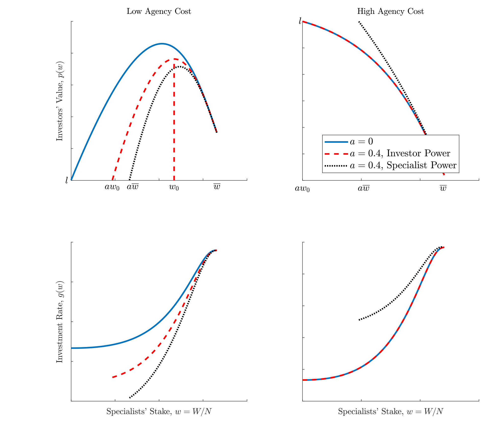
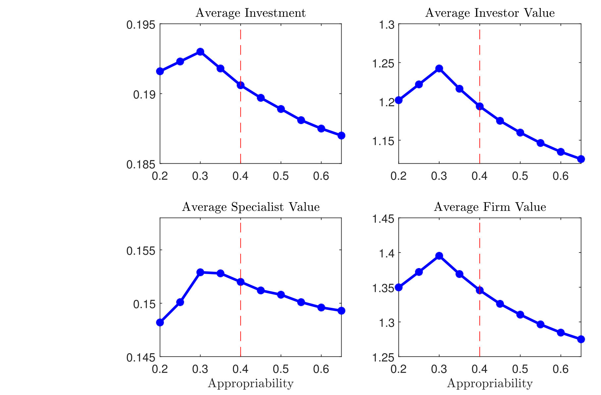
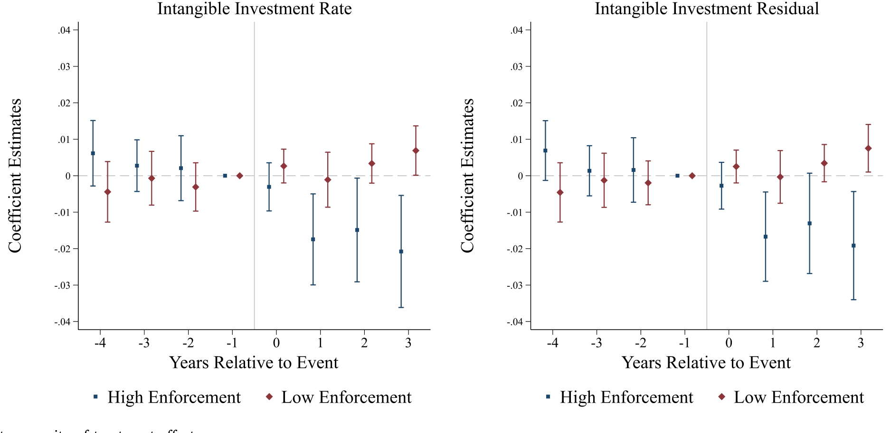
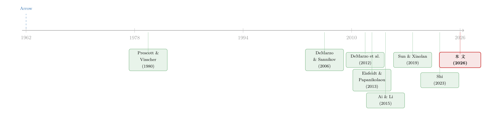

被「偷走」的增长：当员工带走的知识，反而成了让他卖力的理由
本文读的是 Chen, Li, Thakor & Ward (2026, Journal of Financial Economics)：当一家公司投资无形资本，知识会悄悄「长」在员工身上，员工跳槽时能把它带走——传统观点视之为必须用竞业禁止协议堵死的「泄漏」；但这篇论文把道德风险 (moral hazard) 一并塞进一个动态契约模型，发现「能被带走」恰恰抬高了员工的外部选择价值，从而让他更愿意卖力。于是劳动力流动与无形投资之间不是单调的此消彼长，而是一条驼峰形 (hump-shaped) 的关系，最优的竞业管制既不该是完全封锁、也不该是完全放开，而落在中间。
1 一个被讲了六十年的故事，和它漏掉的那半句话
先讲一个经济学里几乎人人都听过的老故事。
1962 年，Kenneth Arrow 写下一段后来被反复引用的论断：知识有「外溢 (knowledge spillovers)」的毛病——你投钱做研发、做品牌、攒下一套别人学不来的 know-how，可这套东西天然管不住，它会顺着人、顺着模仿、顺着员工的脑子流到别处去。既然投资的回报没法被自己完全拿到，企业当然就不肯投够。所以，要想把无形投资和经济增长推上去，就得想办法堵住外溢。
这套逻辑在现实里有一个非常具体的落点：竞业禁止协议 (non-compete agreements)。把员工绑住，不让他带着脑子里的东西跳到对手那儿去，知识就锁在了公司里，老板也就敢放心大胆地投。直到今天，美国联邦贸易委员会 (Federal Trade Commission, FTC) 要不要全面禁止竞业协议，仍是一桩吵得不可开交的政策官司。
故事讲到这儿，听上去逻辑严丝合缝。但是——请注意这个「但是」——它整段都在讲老板的算盘，却把另一半人完全当成了背景板：员工自己怎么想？
无形资本不是从天上掉下来的，它是被一双双手「做」出来的。研发要人去熬，品牌要人去打，一套流程要人一点点磨。这些关键员工——论文里把他们统称为「专家 (specialist)」——的努力，是无形资本能不能长出来的命门。而恰恰是这群人，他们的努力你看不见、也写不进合同：他可以认真干，也可以偷懒摸鱼拿点私下的好处。这就是经典的道德风险。
于是一个被传统故事漏掉的链条浮出水面：如果员工能把知识带走，那么这套知识就抬高了他在外面的身价；身价越高，他越舍不得把这份工作搞砸，也就越有动力卖力。反过来，你用竞业协议把他死死按在原地、剥夺了他「带走知识」的可能，固然防住了泄漏，却也亲手抽掉了他卖力的一个理由。
这就是这篇论文的题眼，也是它标题里那个略带反讽的词——Appropriated Growth，被「攫取/侵占」出来的增长。被偷走的知识，居然可能是增长的引擎，而不只是它的漏洞。

Figure 1: Illustration of agency, appropriation, and bargaining power
2 把两股力量塞进同一个模型
接着，一个自然的问题是：直觉听上去很妙，可它真的成立吗？「外部选择能激励员工」和「员工流失会伤害公司」这两股力量明明方向相反，到底谁赢？
要回答这个，光靠讲故事不够，得有一个能同时容纳两种摩擦的模型：既有 Arrow 那一脉的知识攫取，又有契约理论那一脉的道德风险。这正是论文第一步做的事——一个连续时间、企业异质的动态契约模型。我们把它的骨架一节一节拆开。
2.1 生产与无形资本
企业由「深口袋」的投资者 (investors) 拥有，他们雇专家来发展无形资本 \(N\)。无形资本 \(N\)、实物资本 \(K\)、（非熟练）劳动 \(L\) 一起生产最终产品，企业每一刻的利润为
$$ \Pi_t=\max_{K_t,L_t\ge 0}\Big\{\bar{A}\big(N_t^{\phi}K_t^{1-\phi}\big)^{\alpha}L_t^{1-\alpha}-RK_t-W^{L}L_t-g_tN_t-C(g_tN_t,N_t)\Big\}=ZN_t-g_tN_t-C(g_tN_t,N_t), $$
其中 \(Z>0\) 是无形资本的边际产出（由生产率 \(\bar A\)、资本份额 \(\alpha\)、无形资本占比 \(\phi\)、工资 \(W^L\) 和租金率 \(R\) 决定）。把 \(K\)、\(L\) 在竞争市场上租好之后，利润就被压缩成一个干净的「AK」式表达：每单位无形资本 \(N\) 产出 \(Z\)，再扣掉投资及其调整成本。投资率 \(g\) 是企业的核心选择，它直接决定了整个经济的内生增长速度。
投资是有摩擦的。知识密集型的活儿往往周期长、得持续烧钱才有戏，所以论文给投资率加了一个二次型的调整成本：
$$ g_tN_t+C(g_tN_t,N_t)=N_t\,c(g_t)\equiv N_t\Big(g_t+\frac{\theta}{2}\big(g_t-\delta_N-x\big)^2\Big), $$
\(\theta\) 是调整成本参数，\(x\) 标定平均投资率。正是这个凸成本，制造出可以被分配的「租 (rents)」——也就是无形资本的边际 \(q\)——这块蛋糕最后要在投资者和专家之间切。
无形资本怎么长出来？靠专家的努力 \(e_t\in\{0,1\}\)：
$$ dN_t=(g_te_t-\delta_N)N_t\,dt+\sigma_NN_t\,dB_{Nt}. $$
努力 \(e_t=1\) 时投资才真正转化为资本增长；\(\delta_N>0\) 是折旧；\(\sigma_N\) 度量无形资本质量的内在不确定性——也正是这层噪音，让专家有空间「藏」住自己的偷懒。
2.2 道德风险：偷懒的诱惑
当专家偷懒（\(e_t=0\)）时，他能拿到一笔与投资规模成正比的私人好处 \(\lambda g_tN_t\,dt\)，参数 \(\lambda>0\) 度量代理摩擦的严重程度。流量 \(g_tN_t\) 越大，越容易浑水摸鱼。因为努力不可观测，投资者必须写一份激励相容的合同，用未来的报酬「赎买」专家的努力。
这是 DeMarzo–Sannikov 一脉动态代理模型的经典内核。但论文真正的新意，在下一小节。
2.3 真正关键的一步：技能会被「攫取」
然后，真正关键的一步来了。论文假设：专家在干活的过程中，会一点点把公司的无形资本攫取 (appropriate) 到自己身上，变成一种可以随身带走的「技能 (skill)」\(a_t\)。他若跳槽，就能带着 \(a_tN_t\) 单位的无形资本去加入一家新公司。这里的 \(a_t\) 不是他给当前公司创造价值的能力，而是市场对「他能带去别处的那部分知识」的估值。
为什么技能会随投资而长？论文引了 Bell et al. (2019) 的证据：绝大多数发明家是环境（「养」）的产物，而非天赋（「生」）的产物——投资创造了知识，而知识因其不可剥离 (inalienable)，必然有一部分长在了做事的人身上。于是技能的动态被写成：
$$ da_t=\kappa(g_t-\delta_N)a_t\,dt+\sigma_a a_t\,dB_{at}. $$
我们把这个最核心的方程拆开来看——它是整篇论文的发动机：
注意 \(\kappa\) 这个攫取参数：它度量的正是「投资—学习—攫取」的传导速度。论文反复强调，\(\kappa\) 在现实中很大程度上由当地的劳动力市场流动性决定——而竞业禁止协议，恰恰就是调节 \(\kappa\) 的政策旋钮。管制趋严 → 流动性下降 → \(\kappa\) 变小 → 员工能带走的知识变少。
2.4 外部选择、谈判与挽留
专家什么时候走人？当他在公司里的财富，掉到了低于他去新公司能拿到的水平时。论文记他外部选择的价值为 \(W_0(a_t,a_tN_t)\)，它取决于他的技能、新公司的资本规模，以及他的谈判力。合同初始化时，专家与投资者讨价还价决定专家的初始财富——若投资者握有全部谈判力，则 \(W_0=W_0^I\equiv\arg\max_{W\ge 0}P(a_0,N_0,W)\)；若专家握有全部权力，则 \(W_0=W_0^S\equiv\max\{W:P(a_0,N_0,W)\ge 0\}\)；现实落在两端之间，用一个谈判力参数 \(\psi\in(0,1)\) 来混合。（关于谈判力如何反过来重塑公司的最优决策，可参见《把「门槛」抬高，是为了在谈判桌上赢回来》。）
把这些拼起来，合同要同时干三件事：用基于技能的递延薪酬 (deferred compensation) 诱导努力、挽留专家、并在挽留成本超过继续雇佣价值时主动分手——尽管分手对投资者是有代价的。专家预见到这一切，会把自己外部选择的价值，内化成他未来报酬里被承诺的一部分。
于是，论文最精巧的那句话出现了：高攫取性 (high appropriability) 既能激励专家，又能压低薪酬的货币成本。 因为外部选择本身就是一种激励，它部分替代了你本来要掏的现金。这正是与那些「有限承诺、但没有道德风险」的模型（如 Ai & Li, 2015；Bolton et al., 2019；Ai et al., 2021）的分水岭：在那些模型里，外部选择上升只会通过「敲竹杠 (hold-up)」拖累投资；而一旦引入道德风险，外部选择就有了正面的激励作用，事情就变得非单调了。
3 于是反转出现：一条驼峰
现在我们可以回答第 2 节开头那个问题了：两股力量谁赢？
答案是——看你站在哪一段。这就是论文最漂亮的理论结论：攫取性 \(\kappa\) 与平均投资率、企业价值之间，是一条驼峰形曲线。
把 \(\kappa\) 从 0 一点点调高：
- 一开始（\(\kappa\) 很小，对应 Arrow 式的严厉管制）：员工几乎带不走任何东西，外部选择形同虚设，激励全靠老板掏钱，太贵，于是投资被压住。调高 \(\kappa\) 反而能解放投资——外部选择帮老板分担了激励成本。
- 但 \(\kappa\) 高到一定程度（对应近乎完全放开、Shi (2023) 主张的全面禁止竞业）：员工太容易跑了，攫取风险吞掉了投资者从无形投资里能留下的剩余，继续调高 \(\kappa\) 又开始打击投资。
两端都不好，顶点在中间。这条曲线如图 2 所示——投资率和企业价值都随攫取性先升后降。

Figure 2: Non-Monotonicity of investment rates and firm values as a function of appropriability
这个结论的政策含义相当锋利：Arrow (1962) 主张尽量限制流动（把 \(\kappa\) 压到很低）是次优的，Shi (2023) 主张完全禁止竞业协议（把 \(\kappa\) 推到很高）同样是次优的。最优的竞业管制是一个内点 (interior level)，夹在这两个极端之间。论文与 Shi (2023) 的区别说得很透：Shi 的模型里，公司价值按固定的 Nash 谈判权重在老板和员工之间切，竞业协议只影响新进入者、不改变价值的切分，所以她推出「完全禁止」；而在本文里，最优合同让公司价值和投资取决于专家在公司里的份额，高流动性虽给了激励，却也因攫取风险压低了投资者的回报——于是完全禁止也不对。
值得一提的是，这个机制有一个时点上的精妙之处。在所有动态代理模型里（包括 DeMarzo et al., 2012），随着公司一轮轮成长、无形资本越攒越多，专家在公司里的「股份」会被不断稀释，要维持他的努力，就得追加越来越多的未来承诺——激励变得越来越贵。而本文的知识积累过程，恰恰在同一时刻内生地为专家攒下了丰厚的外部选择。换句话说，攫取在「用未来报酬激励变得最贵」的那一刻，作为补充激励登场了。这是一种时间上的天作之合。（关于知识外溢本身如何跨地理、跨企业流动，可顺带一看《天线效应：硅谷为什么离不开波士顿？》。）
4 把模型拽到数据里：竞业管制当工具变量
理论再漂亮，也得过数据这一关。论文的第二步，是给模型找一个能校准、能检验的经验环境。
谁是「专家」？ 论文选了 CEO——他们对无形资本的塑造举足轻重，而且有 Execucomp 这样的细颗粒薪酬数据。
怎么量「外部选择」？ 技能 \(a_t\) 没法直接观测，但模型告诉我们一件好用的事：CEO 外部选择的美元价值，随这份技能单调上升。于是论文利用这个单调性，基于薪酬结构以及跨行业、跨州的流动性，从 Execucomp 构造出一个高管外部选择价值的代理变量。无形资本存量则用永续盘存法 (perpetual inventory method, Eisfeldt & Papanikolaou, 2013) 估出来。
怎么解决内生性？ 这是识别的核心。外部选择显然可能与其他同时影响投资的不可观测因素纠缠在一起。论文的招数是：拿州层面竞业禁止协议可执行性 (non-compete enforceability) 的监管冲击当工具变量。这些外生的政策变动，被解释为模型里攫取参数 \(\kappa\) 的移动——可执行性增强，劳动力市场流动性下降，专家的外部选择在数据里显著下降。第一阶段干净；第二阶段里，被工具化后的外部选择，平均而言显著抬高了 CEO 离职的概率——和模型一致：外部选择越高，越容易走人。
但真正关键的一步，是非单调性怎么被「看见」。 工具变量的第二阶段结果显示外部选择对投资有负向影响——可这只是各个政策变动州的「局部处理效应」的一个加权平均，会把模型预测的驼峰给抹平、藏起来。
于是论文换上一套堆叠式双重差分 (stacked difference-in-differences, DiD)，并按「被处理公司所在州的事前可执行性是否高于中位数」做异质性切分。结论非常对味：
- 加强竞业管制（压低 CEO 外部选择）总体上提高了投资；
- 但在事前可执行性本就很高的州，加强管制反而压低了投资。
换句话说，对那些劳动力流动本就被卡得很死的州，再给员工一点外部选择，投资是上升的——这正是模型说的激励效应。一条驼峰，就这样从异质性里被还原了出来。如图 4 所示，处理效应的符号随事前可执行性发生了翻转。

Figure 4: Heterogeneity of treatment effects
5 校准之后：把投资成本拆成两半
第三步，论文把模型校准到美国数据，再去检验更多预测。
校准给出一个干净的数字：当前经济里，攫取参数 \(\kappa\approx 0.4\)，与数据里观测到的平均可执行性指数高度吻合。以此为基准，论文模拟「竞业可执行性永久性地变高或变低」会怎样冲击投资——结果是一条非单调曲线：典型的政策冲击无论往哪个方向走，平均投资率都会下降（因为我们本就在驼峰顶附近）。往严了走，激励成本上升；往松了走，流失上升、企业留不住投资的剩余。
更妙的是对投资边际成本的分解。论文把高管按缩放后的外部选择排进五分位，发现投资率随外部选择上升而下降（模型和数据都如此）。但这个下降里藏着两股反向的力：
- 代理成本 (agency cost)：提供激励的难度——随外部选择单调上升；
- 攫取成本 (appropriation cost)：流失威胁带来的成本——先升后降，恰恰在「代理成本最高」的区域转头向下。
后面这半句，正是整篇论文核心直觉的数据回声：在代理摩擦最严重的地方，攫取反而帮忙摊薄了激励的成本。
最后，论文还落到了一个很具体的契约特征上：递延薪酬奖金作为挽留机制。因为分手有代价，最优合同有时会用「挽留奖励」去留住外部选择丰厚的专家。这种奖励不同于 DeMarzo et al. (2012) 里那种「为补偿不耐烦」而发的现金红包，而是表现为递延薪酬奖金；而且它与近期业绩无关——挽留事件绑的是专家不可剥离的技能，而不是公司刚刚干得好不好。论文在数据里证实了这点：外部选择高的高管更可能经历递延薪酬的跳升；而且即便是近期盈利很差的公司里的 CEO，只要外部选择够高，照样能拿到这笔非业绩型的报酬。直觉是——这些钱帮业绩不佳的公司挡住了「人才被挖走、企业在清算中进一步贬值」的命运。
这是一个常被实证文献当作「治理失灵」证据的现象——业绩差的 CEO 居然还涨薪——在这里得到了一个完全契约论的、理性的解释：那不是失灵，那是挽留。
6 文献脉络：从「堵漏」到「内点」
把这条研究的来路理一理，会更清楚这篇论文站在哪儿。
最上游是 Arrow (1962)：知识外溢导致投资不足，于是要堵漏。Prescott & Visscher (1980) 把「组织资本 (organization capital)」这个概念立了起来——知识是存在人身上的。

另一条线是动态契约理论。DeMarzo & Sannikov (2006) 把连续时间的委托—代理问题做成了可解的范式，DeMarzo et al. (2012) 进一步把它接上了投资的 q 理论——这正是本文道德风险那一半的直系祖先。
第三条线把「无形资本/人力资本不可剥离」塞进了增长与契约：Eisfeldt & Papanikolaou (2013) 用组织资本解释了股票横截面，也提供了本文测无形资本的方法；Ai & Li (2015)、Bolton et al. (2019)、Ai et al. (2021) 这一系，假设投资会增厚专家不可剥离的人力资本与外部选择——和本文很像，但都没有道德风险，因此分手都是外生的；Sun & Xiaolan (2019) 则让流动性更高的劳动力市场使企业能「向员工借钱」（压低当期工资）。
最近的、也是本文最直接的对话对象，是 Shi (2023)：她同样研究劳动力流动限制的宏观影响，并主张完全禁止竞业协议。本文与她分道扬镳的地方，就是那个被加进来的代理冲突——它把「完全禁止」也变成了次优，把答案从「极端」拉回了「内点」。
这就是 Chen, Li, Thakor & Ward (2026) 的位置：它不是在 Arrow 和 Shi 之间和稀泥，而是指出了一个被双方都忽略的机制——员工的流动性同时塑造着他们的激励，于是最优政策天然落在中间。
7 评论与延伸（Q&A + 研究方向）
(a) 几个可能的疑问
Q：「攫取能激励员工」这个机制，和普通的『跳槽威胁涨工资』有什么本质区别？
有区别。普通的外部选择上升，在没有道德风险的模型里只通过敲竹杠（hold-up）压低投资回报，是纯粹的负面力量。本文的关键在于努力不可观测：外部选择因此承担了激励功能——它部分替代了你本来要掏的递延现金。所以同一个「外部选择上升」，在两类模型里符号相反，这也正是非单调性的来源。
Q：用 CEO 当『专家』，会不会太窄了？无形资本明明是一大群研发、品牌、流程的人攒出来的。
这是诚实的代价。选 CEO 是因为
Execucomp能看清薪酬结构、流动性和递延薪酬，识别上干净；但 CEO 的外部选择机制（声誉、董事会网络）和一个研发骨干并不完全一样，外推到「整体无形投资」时要小心。论文把 CEO 当成专家这一类的「样本代表」，而非全部。
Q：拿竞业可执行性当 \(\kappa\) 的工具变量，排他性约束 (exclusion restriction) 站得住吗？
这是最该被盯的地方。担心在于：州层面竞业立法的变动，可能与当地的经济周期、产业结构、其他劳动法一起变动，从而通过「外部选择」以外的渠道影响投资。论文用堆叠 DiD 和事前可执行性的异质性来部分缓解——如果只是普通的宏观共振，不该出现「高/低事前可执行性州符号翻转」这种结构化的模式。但严格说，排他性仍是一个需要信任制度细节的假设。
Q：驼峰的『顶点』到底在哪？\(\kappa\approx 0.4\) 是不是就是最优？
要分清两件事。\(\kappa\approx 0.4\) 是论文校准出的当前经济所处的位置，且与数据里平均可执行性吻合；它不等于福利最优点。论文的模拟显示，从 0.4 往两边的典型政策冲击都会降低平均投资，说明我们大致在顶附近——但「社会最优的 \(\kappa\)」还取决于流失风险的福利计价，论文对此是谨慎的。
Q：业绩差还发递延奖金，凭什么说是『挽留』而不是『治理失灵』？
因为论文给出了一个可证伪的模式：挽留支付绑的是外部选择/不可剥离技能，而与近期业绩无关。如果是治理失灵（董事会被俘获），我们没理由预期支付与外部选择如此系统地相关、却与业绩无关。数据里恰恰是「外部选择高 → 递延薪酬跳升」，哪怕盈利很差——这与挽留逻辑一致，与单纯的失灵不一致。
Q：这套结论对中国/欧洲这些劳动力市场制度很不一样的经济体，能照搬吗？
不能直接搬，但框架可迁移。模型的旋钮是 \(\kappa\)（攫取/流动速度），它在不同司法辖区由不同制度决定（竞业法、户籍、行业准入）。结论的形状——驼峰、内点最优——应当是稳健的；但顶点位置和当前所处段，要用当地的流动性与可执行性重新校准。
(b) 几个可能的研究问题与提案
1. 把「专家」从 CEO 下沉到研发/工程骨干。 【经济故事】无形资本的真正生产者多是中层技术骨干，他们的竞业约束、外部选择与离职，可能比 CEO 更贴近模型机制。 【可行性】中。需要带个体职业流动的数据（如领英简历、专利发明人迁移、行政雇佣面板）。识别仍可借州竞业立法冲击，但要处理「谁算关键专家」的测度问题。Doable，但数据获取是门槛。
2. 把这套机制搬到公司债/信用市场：流动性、攫取与违约。
【经济故事】对人力资本高度依赖的公司（无形资本占比高），关键员工流失本身就是一种「资产蒸发」风险。竞业可执行性的变动，会不会通过「人才留存→无形资本稳定性」这条链，影响债券利差与回收率？
【可行性】中。Execucomp/竞业冲击 + TRACE 债券利差 + 无形资本估计（永续盘存法）可拼出面板。识别用州竞业立法的堆叠 DiD。诚实地说，把「员工流失」与「信用风险」之间的因果链打通不容易，但相关性证据是 doable 的，且方向新颖。
3. 外资持有人 vs. 竞业管制：谁更怕人才流失？ 【经济故事】若无形资本密集型公司的价值高度系于关键员工，那么对人才流失更敏感的投资者（比如信息劣势、退出成本高的外资股东）可能更偏好强竞业管制的州。竞业立法冲击会不会改变股东结构？ 【可行性】中偏低。需 13F/外资持股数据 + 竞业冲击。机制可讲，但「外资 vs 内资对人才风险的差异化敏感度」要找到干净识别不易，属探索性方向。
4. 直接检验「时间上的天作之合」。
【经济故事】模型说，攫取在「用递延报酬激励变得最贵」的成长阶段登场。能否在数据里直接看到：随公司无形资本积累、CEO 在职变长，其外部选择与递延薪酬的相对权重发生可预测的此消彼长？
【可行性】高。纯用 Execucomp 的薪酬结构面板即可，对在职年限/无形资本分位做事件研究。是检验本文核心动态预测的最低成本切口。
5. FTC 全面禁令的事后评估。 【经济故事】本文预测「完全禁止竞业」是次优的——会因攫取风险拉低投资。若 FTC 的禁令最终落地（或在部分州先行），这就是一次近乎自然实验的检验。 【可行性】高（一旦政策落地）。可用禁令生效的时间/地域差异做 DiD，看无形投资、CEO 流失、递延薪酬如何响应。是本文最直接、最有政策分量的后续。
8 我的判断
这篇论文最让我欣赏的，是它把一个被讲了六十年的「堵漏」叙事，用一个干净的机制掀了个角：知识能被员工带走，这件事既是漏洞，也是激励。把道德风险和知识攫取塞进同一个连续时间契约模型，让非单调性从理论里自然长出来，再用竞业立法冲击 + 堆叠 DiD 的异质性把这条驼峰从数据里还原出来——理论与实证的咬合相当工整。「业绩差也发挽留奖金」从「治理失灵」被重新读成「理性挽留」，也是一处漂亮的应用副产品。
我的保留主要在识别。竞业可执行性的州级变动当 \(\kappa\) 的工具，排他性约束依赖于「这些立法不通过别的渠道影响投资」——而劳动法变动往往与当地产业、政治周期纠缠，论文用事前可执行性的符号翻转来佐证，已经做得相当克制，但我仍希望看到更多关于「立法为何在那个时点、那个州发生」的外生性叙事。其次，用 CEO 代表「专家」是识别上的妥协，把结论外推到整体无形投资时，机制的强度未必守恒。
后续我最想看到两件事：一是把专家下沉到真正生产无形资本的技术骨干（提案 1、4），看核心动态预测在个体职业流动数据里站不站得住；二是如果 FTC 的禁令真的落地，这就是检验「完全禁止是否次优」的天赐实验（提案 5）。如果那时数据显示无形投资在禁令后不升反降，这篇论文的内点论断就会从「模型预测」变成「政策事实」。
参考文献
- Arrow, K. (1962). Economic Welfare and the Allocation of Resources for Invention. In The Rate and Direction of Inventive Activity: Economic and Social Factors. Princeton University Press, 609–626.
- Ai, H., & Li, R. (2015). Investment and CEO compensation under limited commitment. Journal of Financial Economics 116(3), 452–472.
- Ai, H., Kiku, D., Li, R., & Tong, J. (2021). A unified model of firm dynamics with limited commitment and assortative matching. Journal of Finance 76(1), 317–356.
- Bell, A., Chetty, R., Jaravel, X., Petkova, N., & Van Reenen, J. (2019). Who becomes an inventor in America? The importance of exposure to innovation. Quarterly Journal of Economics 134(2), 647–713.
- Bolton, P., Wang, N., & Yang, J. (2019). Optimal contracting, corporate finance, and valuation with inalienable human capital. Journal of Finance 74(3), 1363–1429.
- Chen, Y., Li, X., Thakor, R. T., & Ward, C. (2026). Appropriated growth. Journal of Financial Economics 176, 104207.
- Corrado, C., Hulten, C., & Sichel, D. (2009). Intangible capital and U.S. economic growth. Review of Income and Wealth 55(3), 661–685.
- DeMarzo, P. M., & Sannikov, Y. (2006). Optimal security design and dynamic capital structure in a continuous-time agency model. Journal of Finance 61(6), 2681–2724.
- DeMarzo, P. M., Fishman, M. J., He, Z., & Wang, N. (2012). Dynamic agency and the q theory of investment. Journal of Finance 67(6), 2295–2340.
- Eisfeldt, A. L., & Papanikolaou, D. (2013). Organization capital and the cross-section of expected returns. Journal of Finance 68(4), 1365–1406.
- Prescott, E. C., & Visscher, M. (1980). Organization capital. Journal of Political Economy 88(3), 446–461.
- Shi, L. (2023). Optimal regulation of noncompete contracts. Econometrica 91(2), 425–463.
- Sun, Q., & Xiaolan, M. Z. (2019). Financing intangible capital. Journal of Financial Economics 132, 472–496.